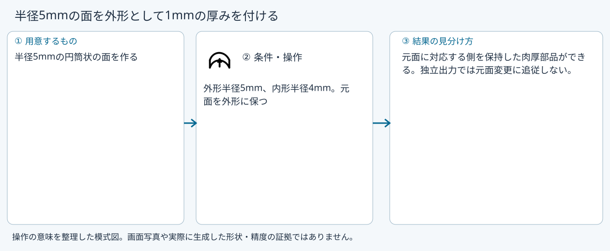
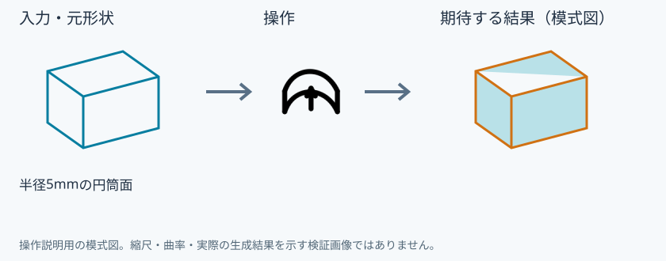
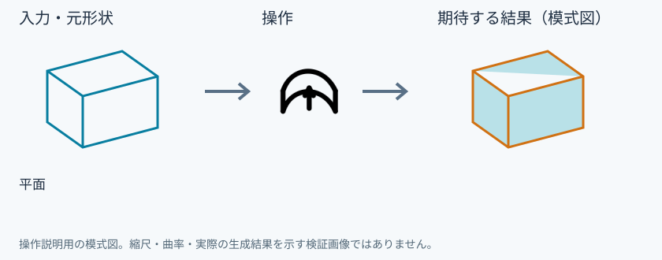
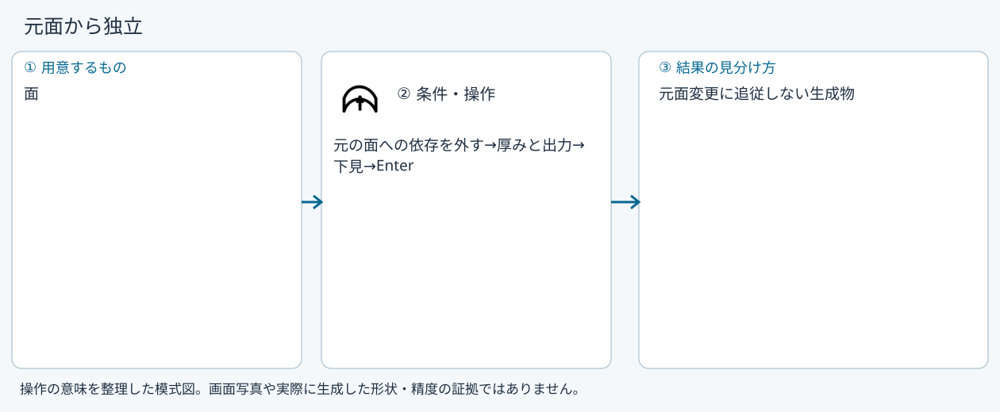
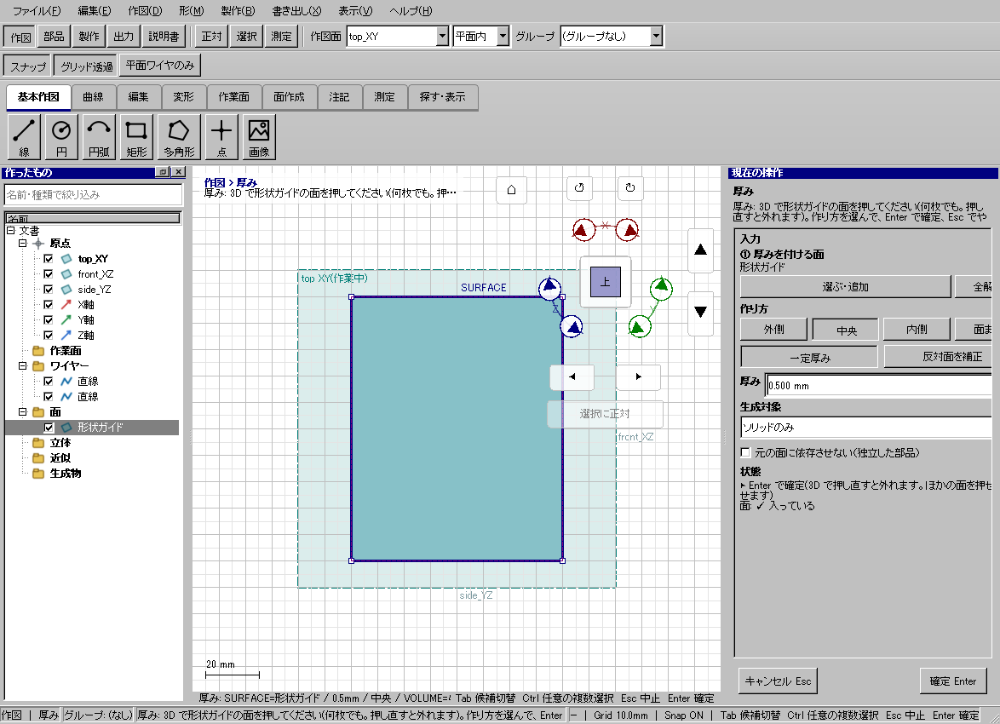

面に厚みを付ける
具体例: 半径5mmの面を外形として1mmの厚みを付ける

準備
半径5mmの円筒状の面を作る
操作手順
- 面に厚みを付けるを選ぶ
- 元の面を追加する
- 内側へ1mm、出力ソリッドを選ぶ
- 依存の有無を決めて下見し、確定する
設定: 外形半径5mm、内形半径4mm。元面を外形に保つ
結果を確認
元面に対応する側を保持した肉厚部品ができる。独立出力では元面変更に追従しない。
取消・やり直し
ダイアログの取消、またはペインの取消を使います。即時操作には未確定段階がありません。 確定済みの文書変更はCtrl+Z、やり直しはCtrl+Yです。保存・書出し済みのファイルはUndoの対象ではありません。
進めない場合
形状ガイドの面を1つ以上選んでください。
対象欄と3Dの強調を照合し、必要な線・面・部品を各役割へ指定します。処理中は計算表示を確認し、取消が可能な処理は取消を使います。
元面を外形に保つ
準備: 半径5mmの円筒面

- 内側
- 厚み1mm
- 下見
- Enter
確認: 外径側R5、内径側R4
中央へ厚み
準備: 平面

- 中央
- 厚み0.5mm
- 下見
- Enter
確認: 面から両側0.25mm
元面を内形に保つ
準備: 半径5mmの円筒面
- 外側
- 厚み1mm
- 下見
- Enter
確認: 内径側R5、外径側R6
元面から独立
準備: 面

- 元の面への依存を外す
- 厚みと出力
- 下見
- Enter
確認: 元面変更に追従しない生成物
ワイヤー出力
準備: 面
- 出力ワイヤーのみ
- 厚み0.5mm
- 下見
- Enter
確認: ソリッドを生成せず境界ワイヤーを残す
Windows版の操作画面
